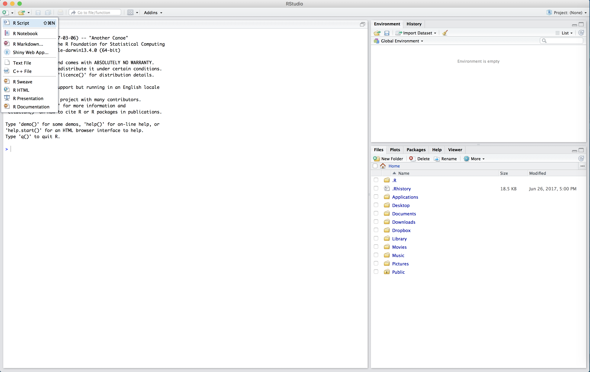
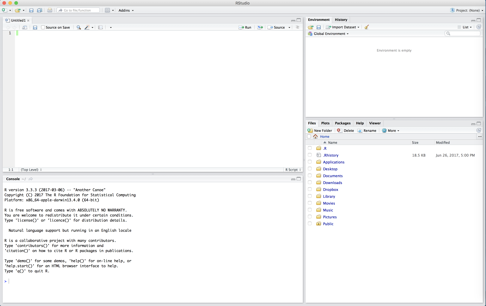
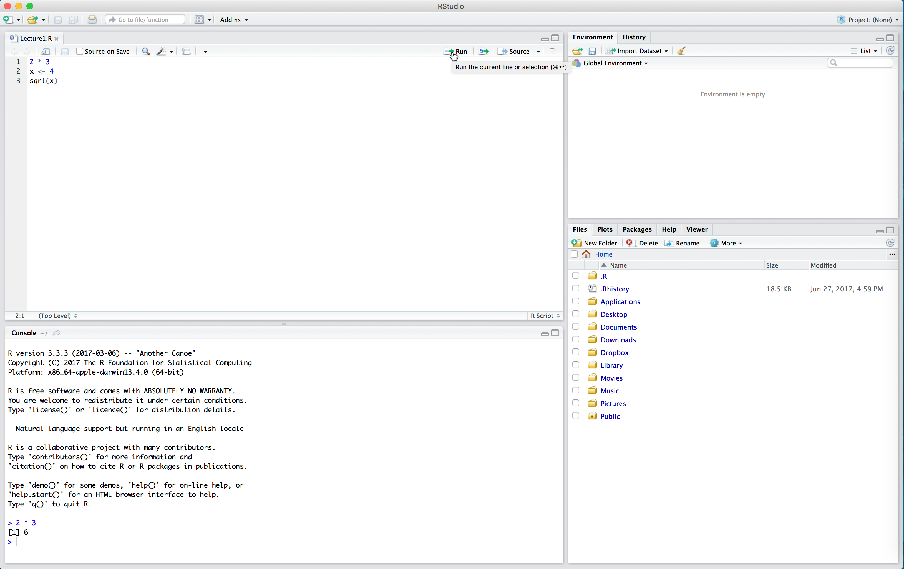

Lecture 1: R Basics & the Tidyverse
Setting our working directory
The working directory is a really powerful concept in R – it is where R saves any output files you create during an analysis and it is the place where R looks for any data you want to read in. When you installed R & RStudio in Lecture 0, we asked you to create a folder on your Desktop called Moneyball. This will be your working directory for the duration of the course.
Every time you open RStudio, it automatically sets the working directory to some default folder on your computer. To see what that is, we’ll open RStudio and look at the console pane.
Once we open RStudio, before we do anything, we need to tell R to change the working directory to our Moneyball folder. We can do this in several ways.
- In the top toolbar, Session/Set Working Directory/Choose Working
Directory allows us to select and set our working directory from our
files.
- The code
setwd("~/Desktop/Moneyball")sets our working directory to the Moneyball folder, and can be edited for any file location.
Important: for this week, every time you open up RStudio, the first thing you should do is set your working directory to the Moneyball folder.
The tidyverse
So far we have seen only the most basic of R’s functionality. Arguably, one of the things that makes R so powerful is the ease with which users are able to define their own functions and release them to the public. As Hadley Wickham defines them, “[R] packages are fundamental units of reproducible code. They include reusable R functions, the documentation that describes how to use them, and sample data.” As of July 8, 2018, there are 12,725 packages available from the Comprehensive R Archive Network (CRAN). The scope of these packages is vast: there are some designed for scraping data from the web, pre-processing data to get it into an analyzable format, performing standard and specialized statistical analyses, and to publish your results. People have also released packages tailored to very specific applications like analyzing baseball data. There are also some more whimsical packages, like one that allow you to display your favorite XKCD comic strip!
For the rest of the course, we will be working within the tidyverse, which
consists of several R packages for data manipulation, exploration, and
visualization. They are all based on a common design philosophy, mostly
developed by Hadley Wickham (whose name you will encounter a lot as you
gain more experience with R). To access all of these packages, you first
need to install them (if you have not already) with the following
code:
The install.packages() function is one way of installing
packages in R. You can also click on the Packages tab in your RStudio
view and then click on Install to type in the package you want to
install.
Now with the tidyverse suite of packages installed, we
can load them with the following code:
When you do that, you’ll see a lot of output to the console, most of which you can safely ignore for now.
Reading in tabular data
Almost all of the data we will encounter in this course (and in the real world) will be tabular. Each row will represent a separate observation and each column will record a particular variable/measurement. For instance, the table below lists different statistics for several basketball players from the 2015-16 NBA regular season. The statistics are: * field goals made (FGM) * field goal attempts (FGA) * three pointers made (TPM) * three point attempts (TPA) * free throws made (FTM) * free throw attempts (FTA)
| PLAYER | SEASON | FGM | FGA | TPM | TPA | FTM | FTA |
|---|---|---|---|---|---|---|---|
| Stephen Curry | 2016 | 805 | 1597 | 402 | 887 | 363 | 400 |
| Damian Lillard | 2016 | 618 | 1474 | 229 | 610 | 414 | 464 |
| Jimmy Butler | 2016 | 470 | 1034 | 64 | 206 | 395 | 475 |
| James Harden | 2016 | 710 | 1617 | 236 | 657 | 720 | 837 |
| Kevin Durant | 2016 | 698 | 1381 | 186 | 480 | 447 | 498 |
| LeBron James | 2016 | 737 | 1416 | 87 | 282 | 359 | 491 |
| Dirk Nowitzki | 2016 | 498 | 1112 | 126 | 342 | 250 | 280 |
| Giannis Antetokounmpo | 2016 | 513 | 1013 | 28 | 110 | 296 | 409 |
| DeMarcus Cousins | 2016 | 601 | 1332 | 70 | 210 | 476 | 663 |
| Marc Gasol | 2016 | 328 | 707 | 2 | 3 | 203 | 245 |
Within the tidyverse, the standard way to store and manipulate
tabular data like this is to use what is known as a tbl
(pronounced tibble), synonymous with a spreadsheet or
data.frame. At a high-level, a tbl is a
two-dimensional array whose columns can be of different data types. That
is, the first column might be characters (e.g. the names of athletes)
and the second column can be numeric (e.g. the number of points
scored).
Throughout the course, you will be downloading all datasets we will analyze to your “data” folder within your working directory (the “Moneyball” folder). All of these datasets are in the form of comma-separated files, which have extension ‘.csv’.
Within the tidyverse, we can use the function read_csv()
to read in a csv file that is stored on your computer and create a
tibble containing all of the data. The dataset showed above is stored in
a csv file named “nba_shooting_small.csv” in the “data” folder of our
working directory. We will read it into R with the
read_csv() function like so:
## Rows: 10 Columns: 8
## ── Column specification ────────────────────────────────────────────────────────
## Delimiter: ","
## chr (1): PLAYER
## dbl (7): SEASON, FGM, FGA, TPM, TPA, FTM, FTA
##
## ℹ Use `spec()` to retrieve the full column specification for this data.
## ℹ Specify the column types or set `show_col_types = FALSE` to quiet this message.Before proceeding, let us parse the syntax
nba_shooting_small <- read_csv(...) The first thing to
notice is that we’re using the assignment operator that we saw in Problem Set 0. This tells R that we want it to
evalaute whatever is on the right-hand side (in this case
read_csv(file = "data/nba_shooting_small.csv")) and assign
the resulting evaluation to a new object called
nba_shooting_small (which R will create). We called the
function read_csv() with one argument file.
This argument is the relative path of the CSV file that we want
to read into R. Basically, R starts in the working directory and first
looks for a folder called “data.” If it finds such a folder, it looks
inside it for a file called “nba_shooting_small.csv.” If it finds the
file, it creates a tbl called
nba_shooting_small that contains all of the data.
When we type in the command and hit Enter or
Return, we see some output printed to the console. This is
read_csv telling us that it (a) found the file, (b) read it
in successfully, and (c) identified the type of data stored in each
column. We see, for instance, that the column named “PLAYER” contains
character strings, and is parsed as
col_character(). Similarly, the number of field goals made
(“FGM”) is parsed as integer data.
When we print out our tbl, R outputs many things: the dimension (in this case, \(10 \times 7\)), the column names, the type of data included in each column, and then the actual data.
## # A tibble: 10 × 8
## PLAYER SEASON FGM FGA TPM TPA FTM FTA
## <chr> <dbl> <dbl> <dbl> <dbl> <dbl> <dbl> <dbl>
## 1 Stephen Curry 2016 805 1597 402 887 363 400
## 2 Damian Lillard 2016 618 1474 229 610 414 464
## 3 Jimmy Butler 2016 470 1034 64 206 395 475
## 4 James Harden 2016 710 1617 236 657 720 837
## 5 Kevin Durant 2016 698 1381 186 480 447 498
## 6 LeBron James 2016 737 1416 87 282 359 491
## 7 Dirk Nowitzki 2016 498 1112 126 342 250 280
## 8 Giannis Antetokounmpo 2016 513 1013 28 110 296 409
## 9 DeMarcus Cousins 2016 601 1332 70 210 476 663
## 10 Marc Gasol 2016 328 707 2 3 203 245Wrangling Data
Now that we have read in our dataset, we’re ready to begin analyzing
it. Very often, our analysis will involve some type of manipulation or
wrangling of the data contained in the tbl. For
instance, we may want to compute some new summary statistic based on the
data in the table. In our NBA example, we could compute, say, each
player’s field goal percentage. Alternatively, we could subset our data
to find all players who took at least 100 three point shots and made at
least 80% of their free throws. One package within the
tidyverse is called dplyr and it contains five
main functions corresponding to the most common things that you’ll end
up doing to your data. Over the next two days, we will learn each of
these:
- reorder the rows with
arrange(), - creating new variables that are functions of existing variables with
mutate(), - identify observations satisfying certain conditions with
filter(), - picking a subset of variables by names with
select(), - generating simple summaries of the data with
reframe().
Arranging Data
The arrange() function works by taking a tbl and a set
of column names and sorting the data according to the values in these
columns.
## # A tibble: 10 × 8
## PLAYER SEASON FGM FGA TPM TPA FTM FTA
## <chr> <dbl> <dbl> <dbl> <dbl> <dbl> <dbl> <dbl>
## 1 Marc Gasol 2016 328 707 2 3 203 245
## 2 Giannis Antetokounmpo 2016 513 1013 28 110 296 409
## 3 Jimmy Butler 2016 470 1034 64 206 395 475
## 4 Dirk Nowitzki 2016 498 1112 126 342 250 280
## 5 DeMarcus Cousins 2016 601 1332 70 210 476 663
## 6 Kevin Durant 2016 698 1381 186 480 447 498
## 7 LeBron James 2016 737 1416 87 282 359 491
## 8 Damian Lillard 2016 618 1474 229 610 414 464
## 9 Stephen Curry 2016 805 1597 402 887 363 400
## 10 James Harden 2016 710 1617 236 657 720 837The code above takes our tbl and sorts the rows in
ascending order of FGA. We see that Marc Gasol took the fewest number of
field goals (707) while James Harden and Stephen Curry attempted more
than twice as many. We could also sort the players in descending order
using desc():
## # A tibble: 10 × 8
## PLAYER SEASON FGM FGA TPM TPA FTM FTA
## <chr> <dbl> <dbl> <dbl> <dbl> <dbl> <dbl> <dbl>
## 1 James Harden 2016 710 1617 236 657 720 837
## 2 Stephen Curry 2016 805 1597 402 887 363 400
## 3 Damian Lillard 2016 618 1474 229 610 414 464
## 4 LeBron James 2016 737 1416 87 282 359 491
## 5 Kevin Durant 2016 698 1381 186 480 447 498
## 6 DeMarcus Cousins 2016 601 1332 70 210 476 663
## 7 Dirk Nowitzki 2016 498 1112 126 342 250 280
## 8 Jimmy Butler 2016 470 1034 64 206 395 475
## 9 Giannis Antetokounmpo 2016 513 1013 28 110 296 409
## 10 Marc Gasol 2016 328 707 2 3 203 245In this small dataset, no two players attempted the same number of
field goals. In larger datasets (like the one you’ll see in Problem Set 1), it can be the case that there are
multiple rows with the same value in a given column. When arranging the
rows of a tbl, to break ties, we can specify more than
column. For instance, the code below sorts the players first by the
number of field goal attempts and then by the number of three point
attempts.
## # A tibble: 10 × 8
## PLAYER SEASON FGM FGA TPM TPA FTM FTA
## <chr> <dbl> <dbl> <dbl> <dbl> <dbl> <dbl> <dbl>
## 1 Marc Gasol 2016 328 707 2 3 203 245
## 2 Giannis Antetokounmpo 2016 513 1013 28 110 296 409
## 3 Jimmy Butler 2016 470 1034 64 206 395 475
## 4 Dirk Nowitzki 2016 498 1112 126 342 250 280
## 5 DeMarcus Cousins 2016 601 1332 70 210 476 663
## 6 Kevin Durant 2016 698 1381 186 480 447 498
## 7 LeBron James 2016 737 1416 87 282 359 491
## 8 Damian Lillard 2016 618 1474 229 610 414 464
## 9 Stephen Curry 2016 805 1597 402 887 363 400
## 10 James Harden 2016 710 1617 236 657 720 837Now consider the two lines of code:
## # A tibble: 10 × 8
## PLAYER SEASON FGM FGA TPM TPA FTM FTA
## <chr> <dbl> <dbl> <dbl> <dbl> <dbl> <dbl> <dbl>
## 1 Damian Lillard 2016 618 1474 229 610 414 464
## 2 DeMarcus Cousins 2016 601 1332 70 210 476 663
## 3 Dirk Nowitzki 2016 498 1112 126 342 250 280
## 4 Giannis Antetokounmpo 2016 513 1013 28 110 296 409
## 5 James Harden 2016 710 1617 236 657 720 837
## 6 Jimmy Butler 2016 470 1034 64 206 395 475
## 7 Kevin Durant 2016 698 1381 186 480 447 498
## 8 LeBron James 2016 737 1416 87 282 359 491
## 9 Marc Gasol 2016 328 707 2 3 203 245
## 10 Stephen Curry 2016 805 1597 402 887 363 400## # A tibble: 10 × 8
## PLAYER SEASON FGM FGA TPM TPA FTM FTA
## <chr> <dbl> <dbl> <dbl> <dbl> <dbl> <dbl> <dbl>
## 1 Stephen Curry 2016 805 1597 402 887 363 400
## 2 Damian Lillard 2016 618 1474 229 610 414 464
## 3 Jimmy Butler 2016 470 1034 64 206 395 475
## 4 James Harden 2016 710 1617 236 657 720 837
## 5 Kevin Durant 2016 698 1381 186 480 447 498
## 6 LeBron James 2016 737 1416 87 282 359 491
## 7 Dirk Nowitzki 2016 498 1112 126 342 250 280
## 8 Giannis Antetokounmpo 2016 513 1013 28 110 296 409
## 9 DeMarcus Cousins 2016 601 1332 70 210 476 663
## 10 Marc Gasol 2016 328 707 2 3 203 245In the first line, we’ve sorted the players in alphabet order of
their first name. But when we print out our tbl,
nba_shooting_small, we see that the players are no longer
sorted. This is because dplyr (and most other R) functions
never modify their input but work by creating a copy
and modifying that copy. If we wanted to preserve the new ordering, we
would have to overwrite nba_shooting_small using a
combination of the assignment operator and arrange().
## # A tibble: 10 × 8
## PLAYER SEASON FGM FGA TPM TPA FTM FTA
## <chr> <dbl> <dbl> <dbl> <dbl> <dbl> <dbl> <dbl>
## 1 Damian Lillard 2016 618 1474 229 610 414 464
## 2 DeMarcus Cousins 2016 601 1332 70 210 476 663
## 3 Dirk Nowitzki 2016 498 1112 126 342 250 280
## 4 Giannis Antetokounmpo 2016 513 1013 28 110 296 409
## 5 James Harden 2016 710 1617 236 657 720 837
## 6 Jimmy Butler 2016 470 1034 64 206 395 475
## 7 Kevin Durant 2016 698 1381 186 480 447 498
## 8 LeBron James 2016 737 1416 87 282 359 491
## 9 Marc Gasol 2016 328 707 2 3 203 245
## 10 Stephen Curry 2016 805 1597 402 887 363 400Creating new variables from old
While arranging our data is useful, it is not quite sufficient to
determine which player is the best shooter in our dataset. Perhaps the
simplest way to compare players’ shooting ability is with field goal
percentage (FGP). We can compute this percentage using the formula \(\text{FGP} =
\frac{\text{FGM}}{\text{FGA}}.\) We use the function
mutate() to add a column to our tbl.
## # A tibble: 10 × 9
## PLAYER SEASON FGM FGA TPM TPA FTM FTA FGP
## <chr> <dbl> <dbl> <dbl> <dbl> <dbl> <dbl> <dbl> <dbl>
## 1 Damian Lillard 2016 618 1474 229 610 414 464 0.41927
## 2 DeMarcus Cousins 2016 601 1332 70 210 476 663 0.45120
## 3 Dirk Nowitzki 2016 498 1112 126 342 250 280 0.44784
## 4 Giannis Antetokounmpo 2016 513 1013 28 110 296 409 0.50642
## 5 James Harden 2016 710 1617 236 657 720 837 0.43908
## 6 Jimmy Butler 2016 470 1034 64 206 395 475 0.45455
## 7 Kevin Durant 2016 698 1381 186 480 447 498 0.50543
## 8 LeBron James 2016 737 1416 87 282 359 491 0.52048
## 9 Marc Gasol 2016 328 707 2 3 203 245 0.46393
## 10 Stephen Curry 2016 805 1597 402 887 363 400 0.50407The syntax for mutate() looks kind of similar to
arrange(): the first argument tells R what tbl
we want to manipulate and the second argument tells R how to compute
FGP. As expected, when we run this command, R returns a
`tbl with a new column containing the field goal percentage
for each of these 10 players. Just like with arrange(), if
we call mutate() by itself, R will not add the new column
to our existing data frame. In order to permanently add a column for
field goal percentages to nba_shooting_small, we’re going
to need to use the assignment operator.
It turns out that we can add multiple columns to a
tbl at once by passing more arguments to
mutate(), one for each column we wish to define.
## # A tibble: 10 × 11
## PLAYER SEASON FGM FGA TPM TPA FTM FTA FGP TPP FTP
## <chr> <dbl> <dbl> <dbl> <dbl> <dbl> <dbl> <dbl> <dbl> <dbl> <dbl>
## 1 Damian Lillard 2016 618 1474 229 610 414 464 0.41927 0.37541 0.89224
## 2 DeMarcus Cousins 2016 601 1332 70 210 476 663 0.45120 0.33333 0.71795
## 3 Dirk Nowitzki 2016 498 1112 126 342 250 280 0.44784 0.36842 0.89286
## 4 Giannis Antetokounmpo 2016 513 1013 28 110 296 409 0.50642 0.25455 0.72372
## 5 James Harden 2016 710 1617 236 657 720 837 0.43908 0.35921 0.86022
## 6 Jimmy Butler 2016 470 1034 64 206 395 475 0.45455 0.31068 0.83158
## 7 Kevin Durant 2016 698 1381 186 480 447 498 0.50543 0.3875 0.89759
## 8 LeBron James 2016 737 1416 87 282 359 491 0.52048 0.30851 0.73116
## 9 Marc Gasol 2016 328 707 2 3 203 245 0.46393 0.66667 0.82857
## 10 Stephen Curry 2016 805 1597 402 887 363 400 0.50407 0.45321 0.9075A quick digression: R Scripts
Up to this point, we have been working strictly within the R console,
proceeding line-by-line. In the previous code block, we tried to add
three columns to our tbl and the mutate call
got a little bit over-whelming. Imagine trying to add five or six more
columns simultaneously! As our commands become more and more complex,
you’ll find that using the console can get pretty cramped. And if you
make a mistake in entering your code, you’ll get an error and have to
start all over again. Plus, when we start a new session of RStudio, the
console is cleared. How can we save the commands we typed into R? We do
so using an R Script.
An R Script is a file type which R recognizes as storing R commands and is saved as a .R file. R Scripts are useful as we can edit our code before sending it to be run in the console.
We can start a new R Script by clicking on the top left symbol in RStudio and selecting “R Script”.

The untitled R Script will then appear in the top left hand box of RStudio.

In the R Script, type the following:
2 * 3
x <- 4
sqrt(x)Now our code is just sitting in the R Script. To run the code (that
is, evaluate it in the console) we click the “Run” button in the top
right of the script. This will run one line of code at a time -
whichever line the cursor is on. Place your cursor on the first line and
click “Run”. Observe how 2 * 3 now appears in the console,
as well as the output 6.

If we want to run multiple lines at once, we highlight them all and click “Run”.

Note in the above that we had to run x <- 4 before
sqrt(x). We need to define our variables first and run this
code in the console before performing calculations with those variables.
The console can’t “see” the script unless you run the code in the
script.
One very nice thing about RStudio’s script editor is that it will highlight syntax errors with a red squiggly line and a red cross in the sidebar. If you move your mouse over the line, a pop-up will appear that can help you diagnose the potential problem.
Another advantage of R scripts is that you can add comments to your
code, which are preceded by the pound sign / hash sign #.
Comments are useful because they allow you to explain what your code is
doing. Throughout the rest of this course, we will be working
almost exclusively with R scripts rather than directly entering commands
into the console. For the sake of organization, you should save
all of your scripts into the ‘scripts’ folder we created within the
‘Moneyball’ working directory.
Back to the NBA data
One huge advantage with working with R script is the ability to separate commands onto multiple lines. For instance, to add columns for FGP, FTP, and TPP to our tbl, we can write the following in our script window.
Notice how we have separated our command into multiple lines. This makes our script much easier to read.
Chaining commands together with pipes
When dealing with data, we often want to chain
multiple commands together. People will often describe the entire
process of reading in data, wrangling it with commands like
mutate and arrange, then creating visuals and
models, as the data analysis pipeline. The pipe
operator %>% is a convenient tool in the
tidyverse that allows us to create a sequence of code to
analyze data, such as the following code to arrange in descending order
the players based on the rate of field goal attempts that are three
point attempts:
nba_shooting_small %>%
mutate(three_point_fg_rate = TPA / FGA) %>%
arrange(desc(three_point_fg_rate))## # A tibble: 10 × 12
## PLAYER SEASON FGM FGA TPM TPA FTM FTA FGP TPP FTP three_point_fg_rate
## <chr> <dbl> <dbl> <dbl> <dbl> <dbl> <dbl> <dbl> <dbl> <dbl> <dbl> <dbl>
## 1 Stephen C… 2016 805 1597 402 887 363 400 0.50407 0.45321 0.9075 0.55542
## 2 Damian Li… 2016 618 1474 229 610 414 464 0.41927 0.37541 0.89224 0.41384
## 3 James Har… 2016 710 1617 236 657 720 837 0.43908 0.35921 0.86022 0.40631
## 4 Kevin Dur… 2016 698 1381 186 480 447 498 0.50543 0.3875 0.89759 0.34757
## 5 Dirk Nowi… 2016 498 1112 126 342 250 280 0.44784 0.36842 0.89286 0.30755
## 6 Jimmy But… 2016 470 1034 64 206 395 475 0.45455 0.31068 0.83158 0.19923
## 7 LeBron Ja… 2016 737 1416 87 282 359 491 0.52048 0.30851 0.73116 0.19915
## 8 DeMarcus … 2016 601 1332 70 210 476 663 0.45120 0.33333 0.71795 0.15766
## 9 Giannis A… 2016 513 1013 28 110 296 409 0.50642 0.25455 0.72372 0.10859
## 10 Marc Gasol 2016 328 707 2 3 203 245 0.46393 0.66667 0.82857 0.0042433Let’s break down what’s happening here. First, R “pipes” the
tbl nba_shooting_small into into
mutate to create a new variable
three_point_fg_rate. Then it pipes the result of this
mutate into arrange to sort the players based
on this newly created column. With this pipeline we
have created a new variable, and view the players in descending order
without having to specify the data nba_shooting_small more
than once! The sequence of analysis flow naturally top-to-bottom and
puts the emphasis on the actions being carried out by the
analyst (like the functions mutate and
arrange) and the final output rather than a bunch of
temporary tbl’s that may not be of much interest.
We will be using the pipe %>% operator for the
remainder of the week, and you will see how convenient it is to use in
the next lecture when making
visualizations. Next, proceed to practice the basics of reading and
wrangling data in Problem Set 1.
NOTE: There are several conventions for formatting code when using the pipe. See here and here for much more information and for some advanced “special” pipes.